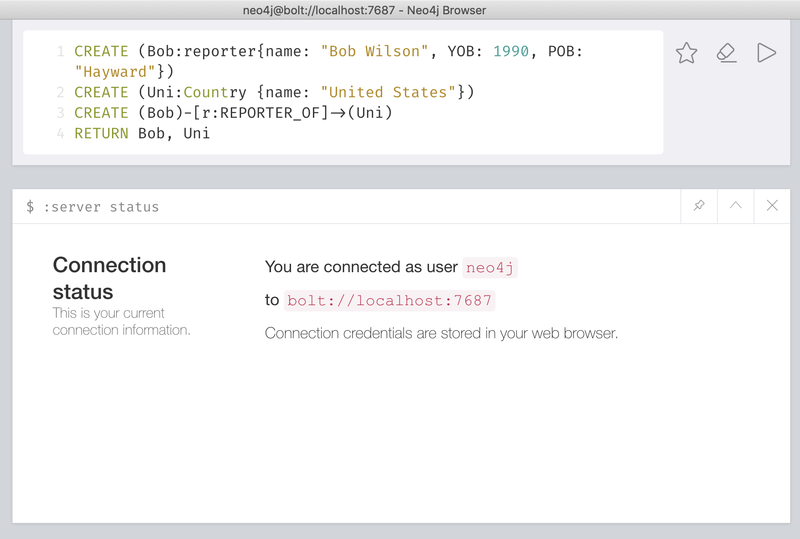
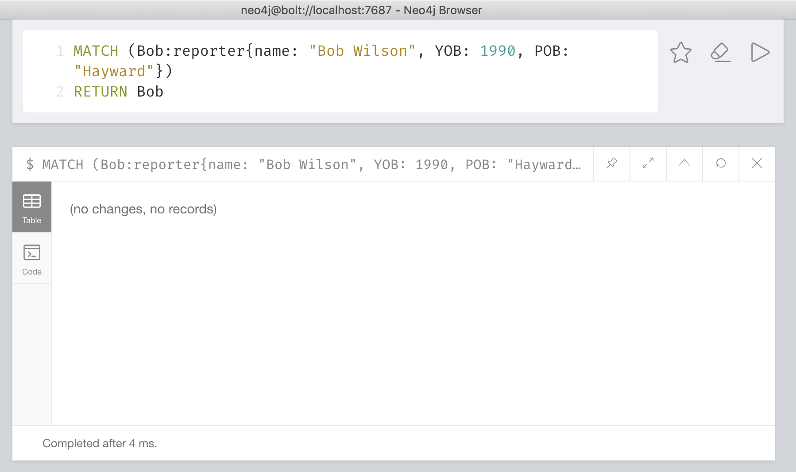

Neo4j CQL - CREATE
1. Neo4j CQL - Create Node without Properties
The Neo4j CQL "CREATE" command is used to create nodes without properties. It just creates a node without any data.
Syntax
CREATE (node-name:label-name)
For example:
This example demonstrates how to create a simple "employee" node Follow these steps:
Step 1 - Open Neo4j browser app.
Step 2 - type the following command at the dollar prompt in the browser.
CREATE (emp:Employee)
Here, emp is a node name and Employee is the label name of emp node.
Step 3 - click the execute button and see the success message in the browser.
The browser shows a label and a node created in the Neo4j database. A node "emp" with the label name "employee".
2. Neo4j CQL - Create Node with Properties
The Neo4j CQL "CREATE" command is used to create nodes with properties. It creates a node with some properties (key-value pairs) to store the data.
Syntax
CREATE (node-name:label-name {Property1-name:Property1-Value........ PropertyN-name:PropertyN-Value})
For example:
This example demonstrates how to create an employee node with some properties (ID, name, Sal, deptno) Follow the steps below-
Step 1 - Open Neo4j data browser.
Step 2 - Type the following command at the dollar prompt in the browser.
CREATE (emp:Employee{id:123,name:"Alice",sal:50000,deptno:10})
Here, emp is a node name and Employee is the label name of dept node.
Step 3 - click the execute button and see the success message in the browser.
Observe success message: added 1 label, created 1 node, set 4 properties, returned 0 lines.
This command has created a node "emp" with 4 properties ("id", "name", "sal", "deptno") and allocated a label "employee".
Verification
To verify the creation of the node, type the following command at the dollar prompt in the browser
MATCH (n) RETURN n
This query returns all the nodes in the database. Then click the execute button and get the following result in the browser.
3. Neo4j CQL - Returning the Created Node
In Neo4j CQL, we can't use the MATCH or RETURN commands by oneself. Therefore, we should combine these two commands to retrieve data from the database.
Syntax
CREATE(node-name:label-name){properties. . . . }) RETURN node-name
For example:
Following is a sample Cypher Query which creates a node with properties and returns it.
Step 1 - Open Neo4j data browser.
Step 2 - Type the following command at the dollar prompt in the browser.
CREATE (Dhawan:player{name: "Shikar Dhawan", YOB: 1985, POB: "Delhi"}) RETURN Dhawan

Step 3 - click the execute button and get the following result in the browser.
Neo4j CQL - RELATIONSHIP
Neo4j graph database follows the attribute graph model to store and manage its data. According to the property graph model, the relationship should be oriented. Otherwise, Neo4j will get an error message. Neo4j relationship is divided into two main types based on directionality: one-way relationship and two-way relationship. In the following scenario, we can use Neo4j CQL CREATE clause to create a relationship between two nodes.
1. Create relationships
In this case, Neo4j database does not have these two nodes. We use the CQL CREATE clause to create two end nodes at once and create new relationship between them.
Syntax
CREATE (node1)-[:RelationshipType]->(node2)
For example:
Following is the syntax to create a relationship using the CREATE clause.
Step 1 - Open Neo4j data browser.
Step 2 - Create two nodes in the database, then create the relationship of two nodes.
CREATE (Bob:reporter{name: "Bob Wilson", YOB: 1990, POB: "Hayward"}) CREATE (Uni:Country {name: "United States"})
Then, create a relationship named REPORTER_OF between these two nodes as
CREATE (Bob)-[r:REPORTER_OF]->(Uni)
RETURN Bob, Uni

Step 3 - Type the command at the dollar prompt in the browser.Click the execute button and get the following result in the browser.
2. Creating a Relationship Between the Existing Nodes
In this case, Neo4j database does not have these two nodes. We use the CQL CREATE clause to create two end nodes at once and create new relationship between them.
Syntax
MATCH (a:LabeofNode1), (b:LabeofNode2)
WHERE a.name = "nameofnode1" AND b.name = " nameofnode2"
CREATE (a)-[: Relation]->(b)
RETURN a,b
For example:
Following is the method to create a relationship using the MATCH clause.
Step 1 - Open Neo4j data browser.
Step 2 - Make sure we use two existing nodes: reporter and country.
CREATE (Bob:reporter{name: "Bob Wilson", YOB: 1990, POB: "Hayward"})
CREATE (Uni:Country {name: "United States"})
Step 3 - Type the command at the dollar prompt in the browser.Click the execute button and get the following result in the browser.
MATCH (a:reporter), (b:Country) WHERE a.name = "Bob Wilson" AND b.name = "United States"
CREATE (a)-[r: REPORTER_OF]->(b)
RETURN a,b
3. Creating a Complete Path
Use continuous relationships to form paths in Neo4j. We can use the create clause to create a path.
Syntax
CREATE p = (Node1 {properties})-[:Relationship_Type]->
(Node2 {properties})[:Relationship_Type]->(Node3 {properties})
RETURN p
For example:
Following is the method to create a path using the CREATE clause.
Step 1 - Open Neo4j data browser.
Step 2 - Creates three nodes and two relationships in one go, assigns it to a path variable, and returns it.
CREATE p = (Bob {name:"Bob Wilson"})-[:TOPSCORRER_OF]->
(Uni {name:"United States"})-[:WINNER_OF]->(WCS2019 {name:"Champions Trophy 2019"})
RETURN p
Step 3 - Type the command at the dollar prompt in the browser.Click the execute button and get the following result in the browser.
Neo4j CQL - MATCH
By using this MATCH clause, We can obtain data about nodes, relationships, and properties from database.
1. Get All Nodes Using MATCH
All nodes in the database can be retrieved by using the MATCH clause of Neo4j.
For example:
Step 1 - Open Neo4j data browser.
Step 2 - Create 5 nodes and 4 relationships before proceeding with the example.
CREATE (Dhoni:player {name: "Bob Dhoni", YOB: 1989, POB: "Ranchi"})
CREATE (Ind:Country {name: "United States", result: "Winners"})
CREATE (CT2019:Tornament {name: "ICC Champions Trophy 2019"})
CREATE (Ind)-[r1:WINNERS_OF {NRR:0.938 ,pts:6}]->(CT2019)
CREATE(Dhoni)-[r2:CAPTAIN_OF]->(Ind)
CREATE (Dhawan:player{name: "David Dhawan", YOB: 1990, POB: "Delhi"})
CREATE (Jadeja:player {name: "Alice Jadeja", YOB: 1988, POB: "NavagamGhed"})
CREATE (Dhawan)-[:TOP_SCORER_OF {Runs:363}]->(Ind)
CREATE (Jadeja)-[:HIGHEST_WICKET_TAKER_OF {Wickets:12}]->(Ind)
Step 3 - Type the command at the dollar prompt in the browser.Click the execute button and get the following result in the browser.
MATCH (n) RETURN n

2. Getting All Nodes Under a Specific Label
By using this MATCH clause, We can obtain all the nodes under a specific label.
Syntax
MATCH (node:label)
RETURN node
For example:
This example shows how to getting all nodes under a specific label from database.
Step 1 - Open Neo4j data browser.
Step 2 - Returns all the nodes in the database under the label player.
MATCH (n:player)
RETURN n
Step 3 - Type the command at the dollar prompt in the browser.Click the execute button and get the following result in the browser.
3. Match by Relationship
By using this MATCH clause, We can retrieve nodes based on relationship.
Syntax
MATCH (node:label)<-[: Relationship]-(n)
RETURN n
For example:
This example shows how to retrieving nodes based on the relationship using the MATCH clause.
Step 1 - Open Neo4j data browser.
Step 2 - Retrieve nodes based on relationship.
MATCH (Ind:Country {name: "United States", result: "Winners"})<-[: TOP_SCORER_OF]-(n)
RETURN n.name
Step 3 - Type the command at the dollar prompt in the browser.Click the execute button and get the following result in the browser.

Neo4j CQL - DELETE
By using this DELETE clause, we can permanently delete the node and its associated properties from the database.
1. Deleting all Nodes
Syntax
MATCH (n) DETACH DELETE n
For example:
This example shows how to permanently delete all nodes from database.
Step 1 - Open Neo4j data browser.
Step 2 - Use the following code to delete all nodes.
MATCH (n) DETACH DELETE n
Step 3 - Type the command at the dollar prompt in the browser.Click the execute button and get the following result in the browser.
2. Deleting a specific Node
To delete a node, we need to replace the details of the specified node with "n" in the above query.
Syntax
MATCH (node:label {properties . . . . . . . . . . })
DETACH DELETE node
For example:
This example shows how to permanently delete one specific node from database.
Step 1 - Open Neo4j data browser.
Step 2 - Create a node "Bob" in the Neo4j database before proceeding with the example.
CREATE (Bob:reporter{name: "Bob Wilson", YOB: 1990, POB: "Hayward"})
Step 3 - Type the command at the dollar prompt in the browser.Click the execute button and get the following result in the browser.
MATCH (Bob:reporter{name: "Bob Wilson", YOB: 1990, POB: "Hayward"})
DETACH DELETE Bob
Verification
Now, check the delete operation completed successfully.
Step 1 - Match the deleted node.
MATCH (Bob:reporter{name: "Bob Wilson", YOB: 1990, POB: "Hayward"})
RETURN Bob
Step 3 - Type the command at the dollar prompt in the browser.Click the execute button and get the no records in the browser.

Neo4j CQL - REMOVE
By using this clause, we can deletes the label and property of a node or relationship.
1. Removing a Property
Syntax
MATCH (node:label{properties . . . . . . . })
REMOVE node.property
RETURN node
For example:
This example shows how to remove the created nodes from database.
Step 1 - Open Neo4j data browser.
Step 2 - Create a node "Bob" in the Neo4j database before proceeding with the example.
CREATE (Bob:reporter{name: "Bob Wilson", YOB: 1990, POB: "Hayward"})
Step 3 - Type the command at the dollar prompt in the browser.
MATCH (Bob:reporter{name: "Bob Wilson", YOB: 1990, POB: "Hayward"})
REMOVE Bob.POB
RETURN Bob
On executing, we can observe that the node named POB was removed.
2. Removing a Label From a Node
We can use the MATCH and REMOVE clauses to remove the properties of a node.
Syntax
MATCH (node:label {properties . . . . . . . . . . . })
REMOVE node:label
RETURN node
For example:
This example shows how to remove a label from an existing node using the REMOVE clause.
Step 1 - Open Neo4j data browser.
Step 2 - Remove the created nodes from database
MATCH (Bob:reporter{name: "Bob Wilson", YOB: 1990, POB: "Hayward"})
REMOVE Bob.reporter
RETURN Bob
On executing, we can observe that the node label was removed.
Previous
Next